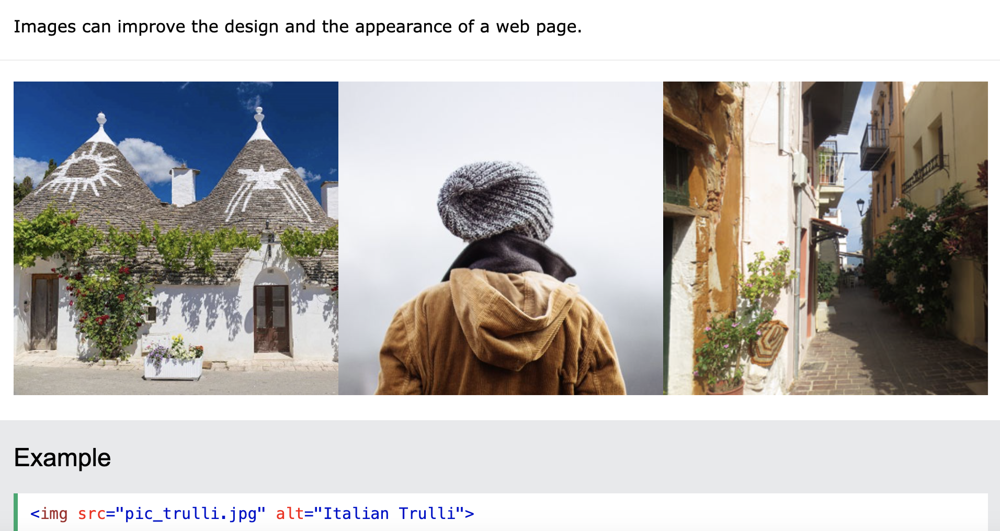

Multimedia si web-ul
Web-ul ar fi foarte plictisitor doar folosind text. Să începem să vedem cum să facem web-ul să prindă viață cu conținut mai interesant!
Ce este multimedia?
Multimedia vine în multe formate si poate fi aproape orice puteți auzi sau vedea. Paginile web conțin adesea elemente multimedia de diferite tipuri și formate.
Multimedia pe web este sunet, muzică, videoclipuri, filme și animații.
Exemple de multimedia pe web:
- Imagini
- Muzica
- Sunet
- Videoclipui
- Inregistrari
- Filme
- Animatii
De ce folosim continut media in paginile web?
Prin încorporarea de videoclipuri, imagini și alte elemente vizuale în site-ul dvs. web, puteți crea o experiență mai dinamică și mai interactivă pentru vizitatorii paginii. Beneficiile conținutului multimedia merg dincolo de aspectul estetic.
Implemetare media in Html - Ghid
- Imagini
- Video
- Audio
- De la <obiect> la <iframe> — alte tehnologii de încorporare
- Adăugarea de grafică vectorială pe Web
- Imagini receptive
Unul din cele mai utilizate tipuri de multimedia sunt fotografiile. Tag-urile pentru imagini sunt: <img src="..."/>
Un alt exemplu de multimedia foarte des intalnit in paginile web este video. Tag-urile pentru video sunt:<video> <source src="..." type=".../mp4"/> </video>
Elementul HTML <audio> este folosit pentru a reda un fișier audio pe o pagină web. Tag-urile pentru audio sunt: <audio> <source src="..." type="..."> si tag-ul de inchidere </audio>
În acest moment, am dori să facem un pas oarecum lateral, analizând
câteva elemente care vă permit să încorporați o mare varietate de
tipuri de conținut în paginile dvs. web: elementele <iframe>,
<embed> și
<object>. <iframe>-urile sunt pentru încorporarea altor
pagini
web, iar celelalte două vă permit să încorporați resurse externe,
cum ar fi fișierele PDF.
Grafica vectoriala poate fi foarte utila in anumite situatii. Spre deosebire de formatele obișnuite, cum ar fi PNG/JPG, acestea nu distorsionează/pixelează atunci când sunt mărite - pot rămâne netede atunci când sunt scalate.

În aceasta sectiune, vom afla despre conceptul de imagini receptive - imagini care funcționează bine pe dispozitive cu dimensiuni de ecran, rezoluții și alte astfel de caracteristici foarte diferite - și vom vedea ce instrumente oferă HTML pentru a ajuta la implementarea lor. Acest lucru ajută la îmbunătățirea performanței pe diferite dispozitive. Imaginile responsive sunt doar o parte a designului responsive, un viitor subiect CSS pe care trebuie să-l înveți.